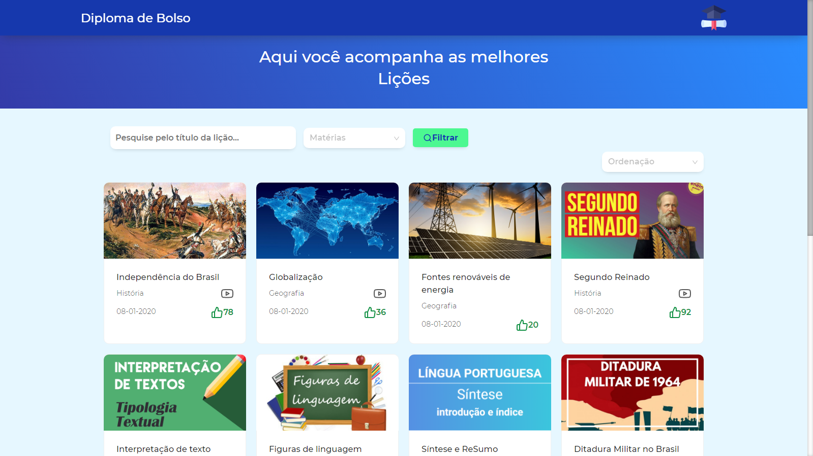
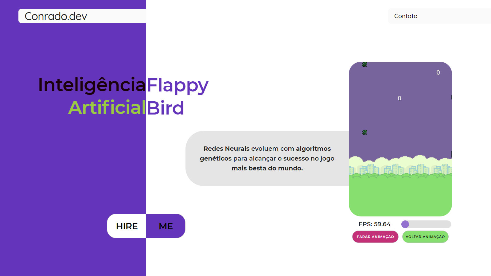
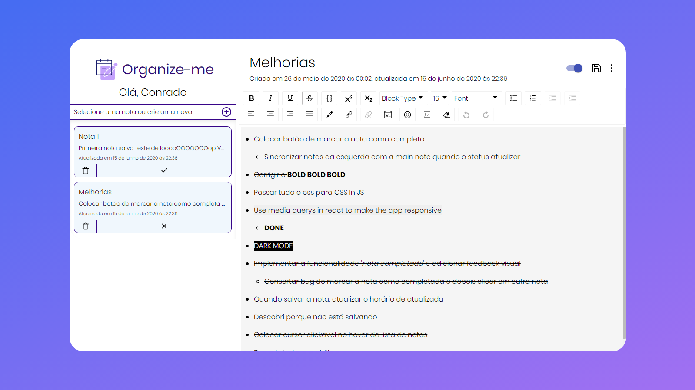
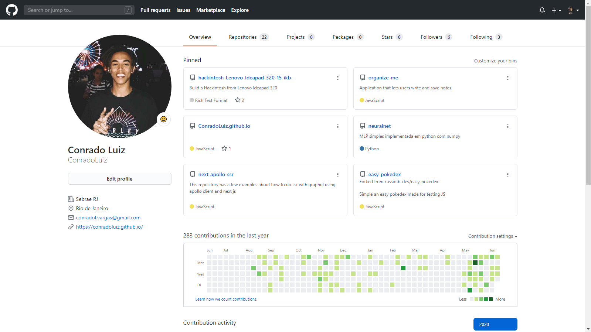

Conrado Luiz
Portfolio

Diploma de Bolso
Projeto ganhador do Hackathon do BNDES de 2 dias. O projeto é uma
solução permite que jovens de baixa renda tenham acesso à educação
digital através da plataforma web ou do aplicativo Diploma de Bolso.
Eu implementei toda a plataforma web. Frontend e Backend.
Tech Stack: React, Express, Node, MongoDB
Github

Inteligência artificial do Flappy Bird
Nesse projeto eu aprendi a como fazer uma rede neural que aprende
uma tarefa ao decorrer do tempo. Além disso, melhorei minhas
habilidades em CSS e JS
Github

Organize-me
Esse projeto é uma aplicação web que permite que o usuário crie
notas e tarefas que ficam salvas na nuvem. Nesse projeto eu aprendi
a como fazer uma aplicação web usando React js e uma API em Node js
no backend Também usei o Firestore da Google como base de dados para
guardar todas as notas. Para fazer a funcionalidade de login e
segurança eu utilizei JWT.
Github
Especial Sebrae Coronavírus
Esse projeto foi feito para o Sebrae Rio no inicio da pandemia do
Coronavírus. O portal tem o intuito de ajudar as empresas a passarem
essa fase de quarentena do vírus. O maior desafio de realizar esse
projeto foi o prazo. O site inteiro tinha que estar pronto em 2
dias. O site foi todo feito por mim Full Stack e utiliza PHP e MySQL
no backend. Ele até saiu numa
matéria no G1
.

Os demais projetos podem ser encontrados no meu Github. Lá eu
coloco a maioria dos meus projetos e testes de novas tecnologias
Também tenhos muitos projetos em privado 😉